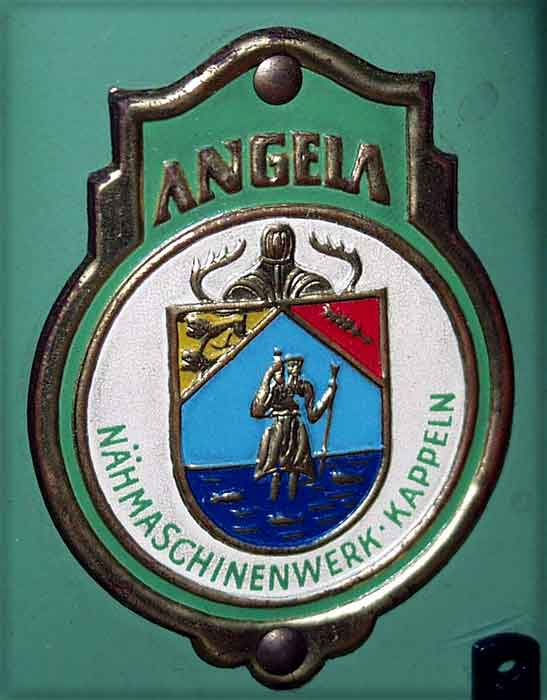

Catalogue of German Makers' Logos
Angela Nächmaschinenfabrik
Kappeln

Picture courtesy of Jan Cnossen
© Alan Quinn 2004
All Rights Reserved
This page may not be reproduced
or distributed in part or in whole without the prior written permission
of the relevant copyright owner